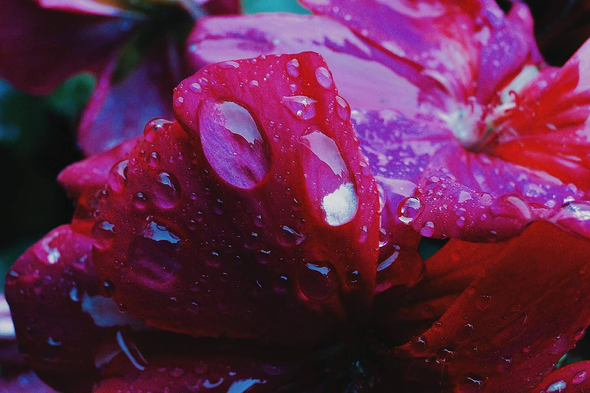
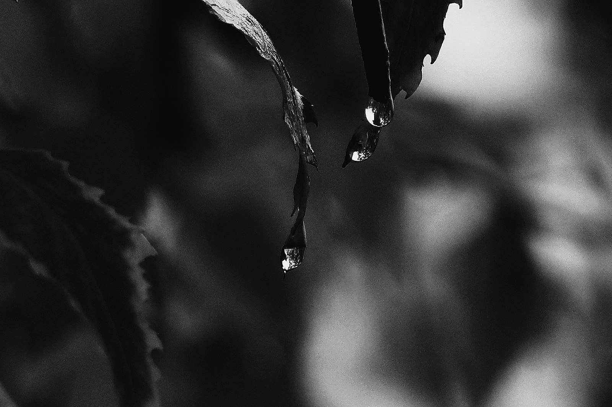

How I make use of my spare time
When it comes to hobbies and activities that I enjoy doing in my free time I can honestly say that
there aren't that many. Although I can mention that I have been a part of a couple of projects organized by the Volunteers Center Skopje in collaboration with Erasmus +.
I would like to give details about two of the projects that I was most passionate about. One of the projects was based on young entrepreneurship, the resources that are available on the market nowadays and specifically how the European Union helps young people with their business ideas.
Meanwhile, the other one was focused on mental health, which was also where I had the opportunity to listen to other people's life stories and now, thanks to these experiences I can say that they have definitely broadened my view of the world.
I also enjoy photography. Although I have never thought about taking it on as a profession, I have certainly captured some photos which I am proud of. These two are some of my favourites:
 